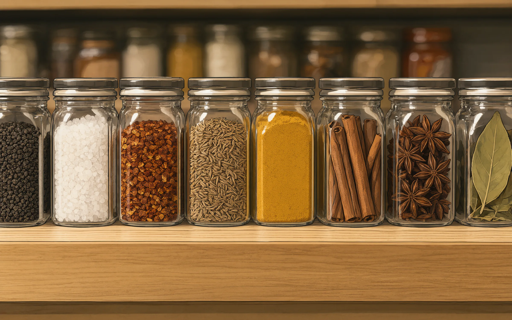
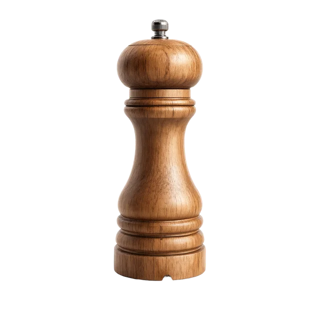
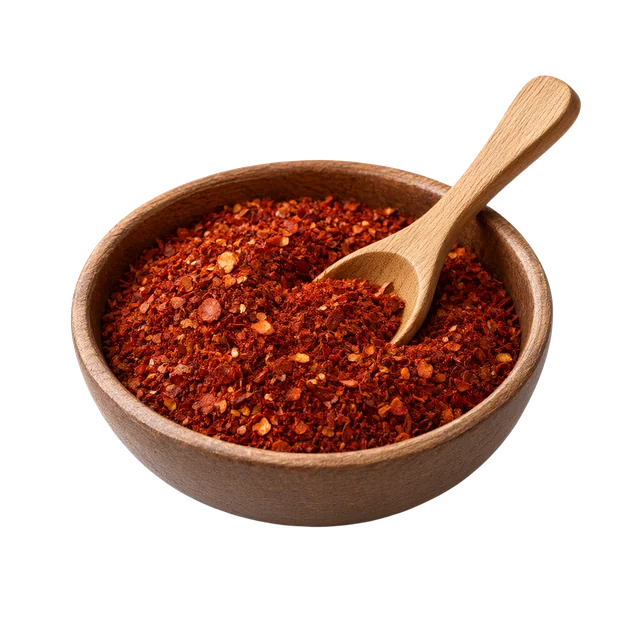
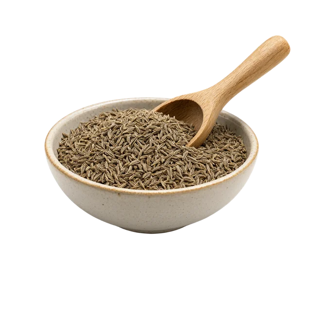
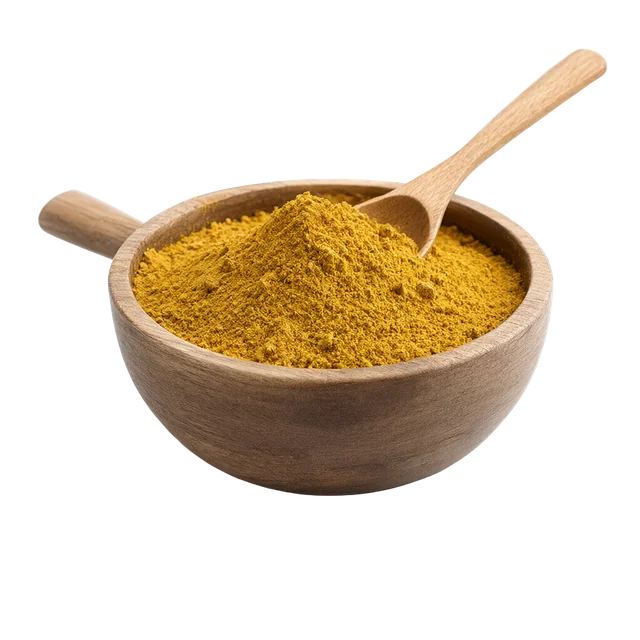

厨房
家居
服装
食物
身体部位
美妆与护肤
出行
Spices
香料调味
场景
卡片
女声
男声

指到或点一下物品
再听一次
black pepper
salt
chili flakes
cumin
curry powder
cinnamon
star anise
bay leaves

black pepper
黑胡椒
salt
盐

chili flakes
辣椒碎

cumin
孜然

curry powder
咖喱粉
cinnamon
肉桂
star anise
八角
bay leaves
香叶
‹ Frozen 冷冻食品
食物
Baking 烘焙 ›